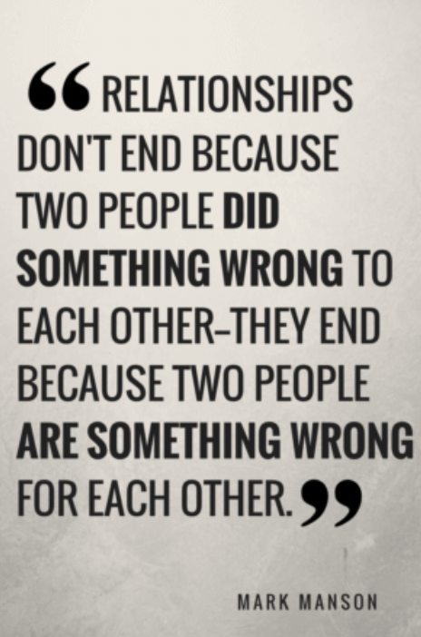

A lot of “advice” out there tries to deconstruct getting over a breakup into these nice little lists, as if you can get over someone you loved and lost by checking another item off of your list like youre going grocery shopping or something. And sure, you probably should “take time for yourself” and “reconnect with friends” and all that, as well see. But to me, all of these things seem like slapping a band-aid on the gaping flesh wound where your heart used to be: technically, they dont really hurt to try, but by themselves, they can only do so much.
So before admonishing you to “get back out there,” I want you to try to look at things a little differently first. Getting over an ex has a lot more to do with knowing who you are and the story you tell yourself about your past relationship than it does with trying to mitigate the pain every time youre reminded of them. Because that pain is coming, whether you like it or not. To that end, its a process, not a destination. You have to be patient. I know, that sucks to hear, but the only way around it is through it.
So grab that bottle of gin and/or gallon of ice cream and lets tackle this fucker together.
And I know you probably wont believe me when I say this, but it really is going to be okay.
Relationships form the basis of meaning in our lives. And not just your interpersonal relationships,1 but even the relationships you have with your job or your identity or your possessions. But because humans rely so much on our social lives to survive and thrive,2 our relationships with each other carry an extra special weight.
Therefore, when you lose a relationship, especially one that was so important and central to your everyday life, you lose that associated meaning. And to lose meaning is to lose a part of yourself. So all of these things are intimately connected — your relationships, your sense of meaning and purpose, and your perception of who you are.
That feeling of emptiness we all feel when we lose someone we love is actually a lack of meaning and lack of identity. There is, quite literally, a hole inside of ourselves. Everything becomes a blank void, empty of any real purpose, and we might even begin to wonder if there’s really any point to life at all.
Surrounding yourself with people who truly care about you is probably one of the most common pieces of advice for getting over someone. It’s great advice, but it’s not because you’ll just start to “feel better” and then forget about the fact that, oh yeah, you’re going to be sleeping alone tonight, aren’t you? And it’s also not because these people provide an outlet for you to work through the failed relationship out loud, though that doesn’t hurt.
No, the real reason is that connecting/reconnecting with people who care about you will start to add meaning back into your life, the meaning that was so abruptly pulled out from underneath you like a cheap dining room rug.
In order to restore that meaning through reconnecting with people, however, you need to make it about more than just you and your past failed relationship. Yes, you need time to vent and to figure things out, and having someone there for that is helpful. But you can’t start to rebuild meaning in your life until you take the time to cultivate relationships that are separate and distinct from your old relationship and your old self.
There seems to be some debate out there about whether or not you should take some time to yourself and just be alone for a while. I think you should, and doubly so if your failed relationship was a toxic one.
If your identity has been so wrapped up in a relationship that’s now gone, well, it’s a good time to explore who you are in contexts outside of that relationship. Rushing out to find someone to fill that void without really figuring out what you want and what you need (see below) is a recipe for recurring relationship disaster.